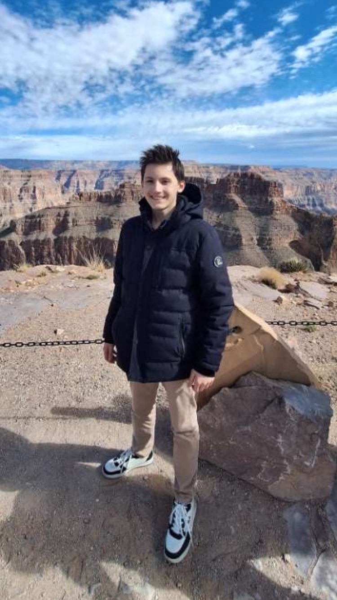

Elève en classe de Seconde générale au Lycée La Salle à Lille, je suis un étudiant rigoureux, curieux et investi. Passionné par le travail en équipe et les environnements créatifs, je suis prêt à mettre à point mes compétences organisationelles, ma créativité et mon sens d'adaptation.
En 2025, j'ai effectué mon stage de 3e dans l'entreprise Skoda à Lomme en tant que conseiller comercial.
Septembre 2025 : Classe de Seconde GT au Lycée La Salle Lille
2025 : Brevet des Collèges mention Bien au Collège La Salle Lille
Anglais : niveau intermédiaire
Allemand : niveau intermédiaire
Pratique du football dans un club de sport
Aime la randonnée
Supporter du LOSC